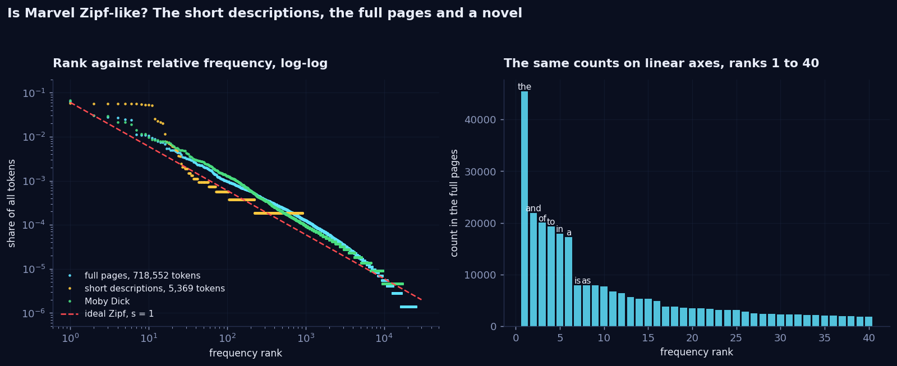
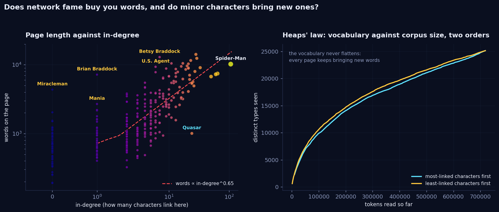
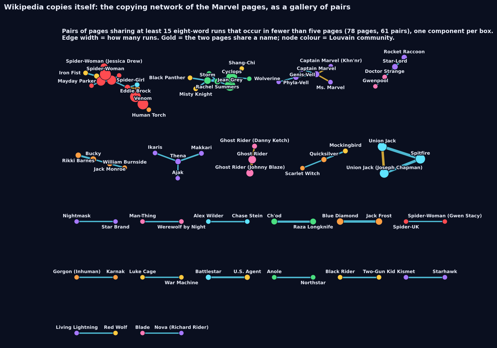
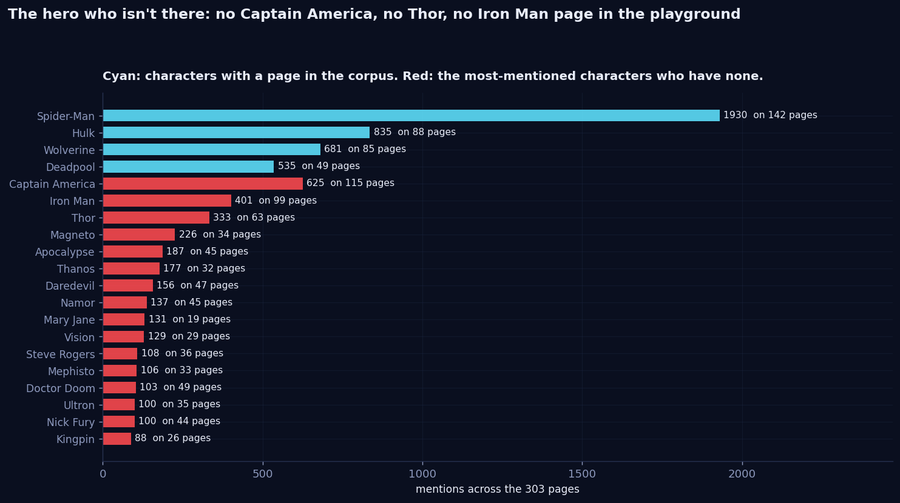

Enemies sit at the same table.
Only family stays home.
This week the network got its text: 303 Wikipedia articles, 4.4 million characters, 718,552 words under the pipeline we chose. We counted first, as instructed, and then asked the text a question the links could never answer: what kind of link is this? For every link from A to B we found the sentence on A's page that mentions B, parsed it, and read it for enemies, allies and family. Foes cross community lines exactly as often as any link. Allies a little less. Family almost never. Along the way we found Wikipedia copying itself 164 words at a time, a search engine that cannot find Thor because there is no Thor, and the characters whose pages a bag of words cannot tell apart. Then we made the words a game.
- Every link is a sentence. We parsed the sentence on A's page that names B and kept a relationship word only when the grammar attaches it to the name. That labels 246 links foe, ally or family. We read 60 of them by hand: foe 15 of 20 right, ally 20 of 20, family 17 of 20.
- Foes cross Louvain's community lines like any link (38 percent against 43 for all links, z = −0.8). Allies cross less (30 percent, z = −2.7). Family almost never (14 percent, z = −4.3). The communities are franchises, not alliances: your archenemy is in your community, your in-laws are.
- Zipf, honestly. Frequency against rank on the full pages has slope 0.92 over the first thousand ranks, Moby Dick 1.07, the 303 one-line descriptions 0.79. The straight line is real; the "law" is a shape.
- Wikipedia copies itself. 288 pairs of pages share five or more eight-word runs that appear nowhere else; Mayday Parker and Spider-Woman share 164 consecutive words. The strongest copies are one character described twice; the rest are teams carrying the same paragraph.
- The hero who isn't there. Captain America is named on 115 of the 303 pages, more pages than Hulk, and has no page in the playground. Nor do Thor, Iron Man, Daredevil, Magneto or Thanos. Our 20-line search engine failed seven of twenty queries for this reason alone.
- SECRET IDENTITY. A bag-of-words machine reads the same clues you do and commits on its own schedule. With distinctive clue words it commits after 4.8 clues and is right 86 percent of the time; on raw counts it reads 9.4 clues and is right 31 percent. That gap is the week, and there is a case of the day to compare scores on.
What we asked
- What is actually in the text? Tokens, types, hapaxes, under stated choices; whether the corpus is Zipf-like and what that plot can and cannot establish.
- Does network fame buy you words? In-degree from week 1 against page length, and who breaks the rule. And Heaps' law: does the vocabulary ever stop growing, and do minor characters bring new words?
- Can the text tell us what a link means? The course's first opener: turn links into relationships, then ask whether enemies sit in different communities than friends.
- Does Wikipedia copy itself? Long shared n-grams between pages, drawn as a network of their own.
- Can a bag of words find a character from a description? A search engine in twenty lines, its failures, and what its failures revealed about the roster.
- Which pages look alike, and which page is the weirdest? Cosine neighbours against network neighbours, and the pages least like the rest of the corpus.
I.Count first
The course's rule for this half is the same as for the network half: know what is in the data before modelling it. So, three pipelines, three answers to "how many words are there", and the difference between them is the first lesson. Tokenization is spaCy's; the rest is our choice and we state it.
| Pipeline | Tokens | Types | Hapax | Ten most frequent |
|---|---|---|---|---|
| spaCy tokens, nothing else | 862,787 | 30,887 | 38% | , the . and of to a in - " |
| letters only, lowercased | 718,552 | 25,138 | 35% | the and of to in a is as by his |
| the same, NLTK stopwords removed | 426,073 | 25,003 | 35% | marvel man spider character new x series appears avengers later |
The comma is the most frequent token in the Marvel universe. Lowercasing and dropping punctuation and numbers removes 144,000 tokens and 5,700 types; dropping 198 stopwords removes another 292,000 tokens but only 135 types, which is Zipf in one row: the function words are few and everywhere. Ten types cover 24 percent of all tokens, a hundred cover 47 percent, a thousand cover 73 percent, and 8,687 types, a third of the vocabulary, occur exactly once. What remains after the stopwords is publishing, not heroism: marvel, character, series, appears, and man and spider, which are one word that spaCy cut in two.

The course explorable showed the descriptions and asked us to predict the full pages. Our prediction was that size would straighten the curve, and it did, but not because Wikipedia became a novel. Fitting a line through log frequency against log rank gives a slope of 0.79 for the descriptions, 0.92 for the full pages over the first thousand ranks, and 1.07 for Moby Dick, which has a third as many tokens as the pages but 44 percent hapaxes to our 35. Over all ranks the Marvel slope is 1.44, steepened by 8,687 words that occur once and sit in a staircase at the bottom right. The descriptions deviate for three reasons we can name: 303 copies of one template sentence (is a superhero appearing in American comic books published by Marvel Comics gives by, marvel, comics, published a flat top that no natural text has), a vocabulary of 906 types with nowhere to put a tail, and the fact that names are a third of it.
II.Does fame buy you words?
Week 1 gave every character an in-degree. Week 5 gives every character a word count. The two are related, and the relationship is strong: Spearman's ρ between in-degree and page length is 0.75, and on log-log axes the slope is 0.65, so doubling the number of characters who link to you buys you 57 percent more words. Pages run from 191 words (Hellfire) to 14,138 (Scarlet Witch), a 74-fold spread the course page warned us to look at before averaging anything.

The exceptions are the finding. Far above the line: Betsy Braddock again (7 in-links, 12,904 words, the second-longest page in the corpus and week 1's most enthusiastic linker), her brother Brian Braddock (1 in-link, 7,180 words), U.S. Agent (6 in-links, 9,327 words), Miracleman (no in-links at all, 4,351 words) and Beta Ray Bill. These are pages somebody cared about far more than the rest of the universe does. Far below the line: Quasar, with 24 in-links and 1,005 words, which turns out not to be a character at all. The page is "the name of several superheroes", a disambiguation with a biography attached, and 24 pages link to the name because four different people have worn it. The link count measured the name; the word count measured the article.
Heaps' law asked whether the vocabulary flattens. It does not: at 718,552 tokens the corpus is still finding new words at 17 to 22 per thousand tokens, and the fitted exponent is 0.49 with the most-linked characters first and 0.54 with the least-linked first. The order matters less than we expected. After 100,000 tokens the hub-first reading knows 10,167 types and the minor-first reading 10,628, and by the end the last fifty pages of either order bring roughly the same trickle: 21.7 new types per thousand tokens when the minor characters come last, 17.4 when the famous ones do. Minor characters do bring slightly more new words per word, because a Runaway's page is about Gert, Nico and the Leapfrog and nobody else's is. But the famous characters' pages are longer, and length wins.
III.Every link is a sentence
A link from A to B exists because somewhere on A's page the editor wrote B's name. That sentence says what the link means, and week 1's network threw it away. So for each of the 1784 links we found every sentence on A's page, after the first, that names B, and asked it what kind of relationship it describes. This was harder than the opener made it sound, and how it went wrong is the most useful thing we learned this week.
Our first detector was a bag of words: a foe if any of enemy, fight, battle, attack, kill appears within ten tokens of the name, an ally for ally, friend, team, alongside, family for wife, son, sister, married. It labelled 380 foes. We read twenty of them. Four were right. In comics everybody fights together, and attack next to a name almost always means they were attacked side by side; kill next to a name usually means somebody else was killed nearby. Nouns only (enemy, nemesis, rival) got foes to 45 percent, still failing on Nova's old enemy Sphinx, where the enemy is Sphinx's, not Nova's. So the final version parses each sentence with spaCy and keeps a relationship word only when the grammar attaches it to the name: an enemy of Iron Fist, his wife, Jean Grey, the vampire Morbius as a compound, fought alongside Nova, His main opponent was Misty Knight, or a verb (fought, defeated, married, dating) whose object is the name and whose subject is the page's own character or a pronoun, following conjunctions back to the subject so that the Sinister Six reform and defeat the Hulk is credited to the Sinister Six. A name that is somebody's possession (Nova's) or a relationship that belongs to a third party (Franklin Richards, son of Mister Fantastic) is rejected. Names shared by two pages (Captain Marvel, Ghost Rider, Spider-Woman) count as ambiguous and are not used.
| What happened to the 1784 links | Links | Meaning |
|---|---|---|
| Target's name is ambiguous | 309 | The name belongs to two or more pages, or is part of the source's own name |
| No sentence names the target | 258 | The link is in an infobox, a list, a caption, or the definition sentence we skip |
| Sentence found, no relationship word attached | 971 | "appears alongside" without the word, a list of characters, a publication note |
| Foe | 78 | Precision when we read 20: 15 right |
| Ally | 109 | 20 of 20 right |
| Family | 51 | 17 of 20 right |
| Mixed | 8 | Two kinds tied, which for Jean Grey's page on Cyclops, or Hercules on the Hulk, is accurate |
246 typed links out of 1784 is a 14 percent yield, and we want to be clear about what that means: this is a typed sample of the network, biased towards links whose sentence is explicit about the relationship. The sixty sentences we read, with our verdict on each, are in the repository as a file the analysis script checks against its own labels, so the precision numbers above are not a memory. The five foe errors are all the same error: a fight in which the two are on the same side, or a pronoun subject that turned out to be somebody else.
![Left: the giant component of the Marvel network with nodes coloured by seven Louvain communities; foe links drawn red, ally links green, family links gold, all other links faint grey. Coloured links of all three kinds run within and between community colours. Right: horizontal bars of the share of each kind of link that crosses a community line: foe 38 percent, ally 30 percent, family 14 percent, each with a white dot and error bar for the shuffled-label null at 43 percent, and a dashed line for all links at 43 percent.](../../assets/figures/week5_relations.png)
The course's question was whether enemies sit in different communities than friends. We ran Louvain on the undirected giant component, best of twenty seeds as in week 4 (modularity 0.388, seven communities), and got franchises: the X-Men around Wolverine and Cyclops; the Spider-people around Spider-Man and Venom; a cosmic table around Hercules, Adam Warlock, Nova and Quasar; the street-level Avengers around Black Panther, Luke Cage and Iron Fist; the supernatural corner of Doctor Strange, Blade, Ghost Rider and Deadpool; the Hulk family with the New Warriors; and the Golden Age with the Inhumans and the Fantastic Four's relatives. Then we asked, for each kind of link, how often its two ends are in different communities, and compared with the labels shuffled among the same links three thousand times.
| Kind of link | n | Crosses communities | Shuffled labels | z | p |
|---|---|---|---|---|---|
| All links in the giant component | 1217 | 43% | — | — | — |
| Foe | 78 | 38% | 43 ± 6% | −0.8 | 0.24 |
| Ally | 103 | 30% | 43 ± 5% | −2.7 | 0.003 |
| Family | 51 | 14% | 43 ± 7% | −4.3 | 0.0003 |
Enemies do not sit at a different table. A foe link crosses a community line as often as a random link does, because a community here is a franchise, and a franchise comes with its villains. The Green Goblin is Spider-Man's, Sabretooth is Wolverine's, the Abomination is the Hulk's. What the communities do sort is blood: family links stay home, and allies lean that way.
Some of what the sentences know. The character with the most foe links pointing at him is the Hulk, sixteen, twice anyone else; every gamma monster, every Defender and half the Avengers have at some point battled the Hulk. The most allied-to is Doctor Strange, six. The most family links point at Cyclops, five: from his son Cable, his daughter Rachel Summers from another future, his brother Vulcan, his fiancée on the film-series page, and from Wolverine, whose page calls Cyclops "her husband" about Jean Grey; the grammar handed Jean's relationship to Wolverine, and that one is wrong. It is exactly the kind of wrong we counted: 17 of 20. Where both pages describe the same link, they agree: ten pairs say family both ways, six say ally both ways, and two say foe both ways, Ares and Hercules, and Eddie Brock and Venom, who are the same person and still cannot get along. Two pairs disagree, and both disagreements are the story: Blade's page calls Morbius a foe, Morbius's calls Blade an ally (they fought, then Morbius joined the Midnight Sons), and Luke Cage calls Misty Knight an ally while her page calls him an opponent from her days with Heroes for Hire.
IV.Wikipedia copies itself
We indexed every run of eight consecutive words in the corpus, 701,335 distinct ones. 695,528 occur on one page. 26 occur on thirty or more, and those are the template: in american comic books published by marvel comics is on 282 of the 303 pages, followed by seven overlapping windows of the same sentence and, further down, at the comic book db archived from the original. Everything else that appears on two, three or four pages is a copy in the ordinary sense, and there are 4,725 such eight-word runs. 1,452 pairs of pages share at least one, 288 share five or more, and 39 share twenty or more.
| Pair | Shared 8-word runs | Longest identical run | Where the long run starts |
|---|---|---|---|
| Eddie Brock ↔ Venom | 471 | 57 words | Roger Stern asking to use the idea for Spider-Man's alien costume |
| Cyclops ↔ Jean Grey | 456 | 102 words | Cyclops leaves his wife and child to lead X-Factor; Claremont's dismay |
| Mayday Parker ↔ Spider-Woman | 187 | 164 words | the twins raised by Mary Jane in Portland, Oregon |
| Spitfire ↔ Union Jack | 185 | 56 words | a list of collected editions, ISBNs and all |
| Ghost Rider ↔ Ghost Rider (Johnny Blaze) | 174 | 62 words | seven riders show their flaming heads for the first time |
| Spider-Girl ↔ Spider-Woman | 173 | 154 words | the daughter of Tonya Parker and Hawkeye |
| Spider-Woman ↔ Spider-Woman (Jessica Drew) | 164 | 129 words | Stan Lee on why the character was created |
| Blue Diamond ↔ Jack Frost | 128 | 82 words | the Liberty Legion's five stories in 1976 |
| Ch'od ↔ Raza Longknife | 91 | 48 words | Dave Cockrum creating the Starjammers |

The strongest copies are one character written twice. Eddie Brock is Venom; the Cyclops and Jean Grey pages retell one marriage from both sides; Wikipedia has a page for the Spider-Woman name and separate ones for Jessica Drew, Gwen Stacy and Spider-Girl, and their "Other versions" sections are the same paragraphs pasted three and four ways; Ghost Rider is three pages; Union Jack is two. Below the top ten the copies are teams: the Starjammers (Ch'od and Raza Longknife share Dave Cockrum's creation story), the Liberty Legion (Blue Diamond, Jack Frost, Blazing Skull and Black Marvel carry the Legion's publication history four times), the Eternals (Thena, Makkari, Ikaris, Ajak), the Runaways (Chase Stein and Alex Wilder), the Inhumans (Karnak and Gorgon), the New Universe (Nightmask and Star Brand), and the X-Men of the Krakoa era, whose "new status quo for mutants" paragraph sits word for word on Rachel Summers's, Storm's and Wild Child's pages. The copying network is a map of Wikipedia's editorial seams: the places where one story was split across articles and nobody rewrote the halves. Of the 61 strong pairs, 48 are inside a single Louvain community, and of the 288 pairs sharing five or more runs, 54 percent are, against roughly one in seven for two pages picked at random. Copying follows the storyline, and storylines mostly stay in their franchise.
V.A search engine in twenty lines, and the hero who isn't there
The document-term matrix of the full pages, one row per character and one column per word with the stopwords removed, is 303 by 25,003 and 97.3 percent zeros. A query is a tiny document, so norse god of thunder becomes a vector with three ones in it, and cosine similarity ranks the 303 pages against it. Twenty queries, each with the character we had in mind:
| Query | Top three | We meant | Rank |
|---|---|---|---|
| king of wakanda | Black Panther, Shuri, Blade | Black Panther | 1 |
| talking raccoon | Rocket Raccoon, Super Rabbit, Ch'od | Rocket Raccoon | 1 |
| healthcare robot big hero 6 | Baymax, Brain Drain, Living Lightning | Baymax | 1 |
| vampire hunter | Blade, Morbius, Elsa Bloodstone | Blade | 1 |
| master archer avenger | Hawkeye, Blue Eagle, Dusk | Hawkeye | 1 |
| green monster gamma radiation | Frankenstein's Monster, Hulk, Phil Urich | Hulk | 2 |
| russian spy avenger | Ursa Major, Black Widow, Yelena Belova | Black Widow | 2 |
| symbiote | Mania, Eddie Brock, Venom | Venom | 3 |
| merc with a mouth | Mark Hazzard: Merc, Firebird, Deadpool | Deadpool | 3 |
| sorcerer supreme | Moonglow, Doctor Spectrum, Hyperion | Doctor Strange | 5 |
| mutant with adamantium claws and a healing factor | Rusty Collins, Redneck, Wolverine (Ultimate) | Wolverine | 5 |
| web slinging teenager from queens | Nightwatch, Anya Corazon, Spider-UK | Spider-Man | 16 |
| norse god of thunder | Starhawk, Hercules, Ares | Thor | not in the corpus |
| super soldier with a shield | Super Rabbit, Isaiah Bradley, U.S. Agent | Captain America | not in the corpus |
| billionaire in a suit of armor | Turbo, Guardsman, Gremlin | Iron Man | not in the corpus |
| blind lawyer from hell's kitchen | Anne Weying, Jessica Jones, Two-Gun Kid | Daredevil | not in the corpus |
| the first mutant | Redneck, Rusty Collins, Fabio Medina | Apocalypse | not in the corpus |
Nine of twenty in the top three, and the failures sort into two piles. The first pile is the engine's: raw counts reward short pages that repeat one query word (Super Rabbit is a vampire-hunting, shield-carrying, sorcerer-adjacent rabbit as far as cosine is concerned, because his page is 291 words long and any hit is a large share of it), and queens, web and teenager are common enough across the corpus that Spider-Man's 10,210 words dilute them to rank 16. Next week's TF-IDF is built for exactly this. The second pile is not the engine's fault at all. There is no Thor.

The playground is Category:Marvel Comics superheroes, which is not the list of Marvel's superheroes. It is the list of articles an editor tagged with exactly that category, and Wikipedia files its biggest names one level down or somewhere else entirely. Captain America is named on 115 of the 303 pages, more pages than the Hulk or Wolverine, 625 times in all, and has no page. Iron Man is named 401 times on 99 pages; the only Iron Man in the roster is the Ultimate Marvel one. Thor, 333 mentions. Magneto, Thanos, Doctor Doom and Ultron are villains and were never going to be here, but Daredevil, Namor, Vision, Nick Fury, the Fantastic Four, Ant-Man, Falcon and the entire X-Men front bench (Beast, Rogue, Nightcrawler, Colossus, Gambit, Professor X) are absent too. Every search-engine query that named one of them was a query about a character the corpus describes only from the outside. Week 1 counted 58 characters nobody links to. The text adds the opposite list: the characters everybody talks about who are not in the room. Both are facts about the category, not about the universe, and for a final project built on a crawled category that is the first thing to check.
VI.Lookalikes, and the weirdest page
The course's lookalikes explorable asked whether text rediscovers the network. It does. Take each page's ten nearest neighbours by cosine on stopword-free counts: 2.77 of them, on average, are also network neighbours, against 0.36 for ten random pages. Wolverine's five nearest are the Ultimate Wolverine, Cyclops, Jubilee, Storm and Jean Grey, all linked to him. The closest pairs that are not linked are all Spider-people who never mention each other: the Mangaverse Spider-Man and Spider-Man Noir (0.81), Spider-Girl and Spider-UK (0.79), the Scarlet Spider and Spider-Man Noir. Same words, no links: alternate versions of one character are written from one template and, living in different universes, have no reason to link. Copying (section IV) and lookalikes find the same seams from opposite ends.
Weirdest page, defined with this week's tools only: the page whose bag of words points least in the corpus's average direction. Among pages of at least 800 words that is Mania (cosine 0.20 to the centroid), a symbiote whose article is about its hosts (Andi, Patricia, Malone), then Chase Stein (Gert, Nico, Karolina, the Leapfrog: a Runaways page in a universe with no other Runaways), Baymax (Hiro, Disney, synthformer), Balder the Brave (Asgard, in a corpus with no Thor) and Radian of the Morituri island from week 1, which the text isolates as cleanly as the links did. Among all pages, Box is weirdest (0.15): a robot suit with a section on its "other users", and Mark Hazzard: Merc, which is not a character at all but a comic book series that somebody filed under superheroes. The pages most like the corpus are Black Marvel, Ms. Marvel and Captain Marvel, because the most frequent content word in the corpus is marvel, and a metric that rewards being average rewards having it in your name. Inspect the text before you believe the metric.
VII.So we made the words a game
All of the above is the god's-eye view again. We wanted the view from inside a bag of words: given the words on a page and nothing else, can you tell who it is, and can a machine? SECRET IDENTITY deals a case file of three kinds of round, linked at the top of this page or here.
- Unmask. One character's page reduced to its words, revealed one at a time with its count on the page and the number of pages it appears in, against four suspects. Name them after one clue for ten points, after all ten for one. The clue order is yours: distinctive (count × ln(303 / pages containing the word), which is next week's TF-IDF a week early), no stopwords, or raw counts, where every case opens with the, to, in and and. The decoys are random characters, or the three pages whose vectors point most in the same direction, which for Spider-Man means Venom, Black Cat and a Spider-Woman. Suspects come from the 80 best-known characters by default, or from the full roster of everyone with 500 words or more, obscurities included. A character's own names are never clues.
- Impostor. One sentence: from a real page, or from a trigram model trained on the pages of one Louvain community? We trained seven generators; a generated sentence is rejected if it shares any nine-word run with the corpus, so nothing you see is a copied sentence in disguise, and real and generated sentences go through the same detokenizer and have the same length distribution, so nothing cheap works. What works is noticing that a trigram model forgets its subject after two words.
- Redacted. A concordance line from a page with the key word blacked out and four candidates. Two of the wrong ones are NLTK's similar() words: words that occur somewhere in the corpus between the same left and right neighbours as the answer. Character and member are similar to company in this sense. Similar context is not similar meaning, and the round is built to make you feel the difference.
The machine plays the unmask rounds against you, and it is a race. Each suspect is its page as a bag of words, stopwords removed, scaled to length one; the machine scores a suspect by adding up that suspect's weights for the clues revealed so far, which is the cosine between your clue list and the page, the lookalikes measure with the query being the clues. It never sees the answer. It reads at least two clues and commits as soon as one suspect scores twice the runner-up, or is forced to guess on the tenth; a wrong commitment scores zero, like yours. While you read, a widget on the card tells you when it has committed, never to whom, so you know the machine is done and you are still hesitating. On the reveal you see the cosine of all four suspects at the moment it committed, and at which clue each one took the lead. We simulated 300 rounds per setting. With distinctive clues, lookalike decoys and the famous roster it commits after 4.8 clues, is right 86 percent of the time and scores 5.6 points a round, which a fan beats and a newcomer does not. With raw counts it reads 9.4 clues, is right 31 percent of the time and scores 0.7 points a round: a list that begins the, to, in, and, of, a, is tells cosine nothing, and it tells you nothing either. That is Zipf's law and the reason for stopword removal, in a form you can lose at. The case of the day is one fixed case for everyone, seeded by the date, with a result you can copy and compare. A test script runs the shipped engine under node and checks its scores, picks and commitments against Python, that no generated sentence copies the corpus, and that no clue is a character's own name.
What surprised us
- Enemies sit at the same table. We expected foes to cross community lines and found them crossing at exactly the rate of any link. A Marvel community is a franchise, and a franchise ships with its villains.
- Family is the strongest signal in the network. Fourteen percent of family links cross a community line against 43 for everything else. Blood is the one relationship Louvain can see.
- Our first foe detector was 20 percent right. "Attack" near a name means "attacked side by side" in this corpus. Reading twenty sentences saved the section; the course said to inspect the text and it was not joking.
- There is no Captain America. Named on 115 pages, absent from all 303. Seven of our search engine's eleven failures were the roster's, not the engine's.
- 164 words, twice. Mayday Parker's and Spider-Woman's pages share a paragraph longer than most characters' whole articles.
- Quasar is a name, not a person. The one character far below the fame-buys-words line is a page about four people who wore the same bands, and week 1 counted links to the name.
- Raw counts break the machine too. We built the machine to be hard to beat and then watched it lose seven rounds in ten on the, of, and. The lesson of stopwords is that they are democratic: they hide everyone equally.
Reproduce it
One module holds the text machinery (loading, tokenizing with a cache, the trigram model, the relationship labeller, Louvain), one script builds every figure and number in this post, one builds the game's data, and one checks the game's engine against Python by running the shipped file under node.
git clone https://github.com/Oddvar112/Social-Graphs-and-Interactions
cd Social-Graphs-and-Interactions
python scripts/analyse_week5.py # every figure and number in this post (three to four minutes;
# the first run tokenizes the 303 pages with spaCy and caches them)
python scripts/build_week5_data.py # bags of words, generated sentences, blanks -> data/week5_secret.js
python scripts/test_secret_identity.py # runs weeks/week5/game/core.js under node, diffs it against Python,
# and checks that no generated sentence copies the corpus
python -m http.server 8000 # then open http://localhost:8000/weeks/week5/game/The text is the course's frozen release, marvel_pages.zip, unmodified in the repository root.
Every number above is written to data/stats_week5.json by analyse_week5.py. The sixty
sentences we read and our verdict on each are in data/week5_label_audit.tsv; the analysis reads that
file back and fails loudly if its labels have drifted from what was audited. Requires spaCy with
en_core_web_sm, NLTK with its stopword list, scikit-learn, networkx and the usual. Moby Dick comes from
NLTK's Gutenberg sample if it is installed and is skipped otherwise. The character pictures in the game are the
lead images of the Wikipedia articles, loaded from Wikipedia as you play and credited on the card; we store only
their URLs.